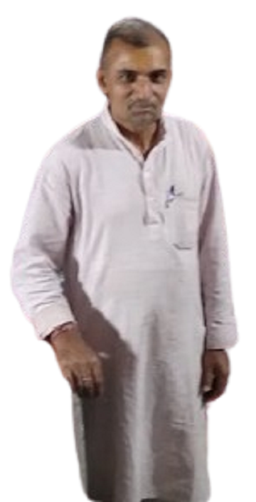

About Us
Care for all foundation was founded with a mission to provide food, shelter, and medical care to
animals living on the streets. Our team of volunteers works tirelessly to make a positive impact in the
lives of these vulnerable creatures.
We believe that every animal deserves love, compassion, and a chance at a better life. Through our
efforts, we strive to create a world where all animals are treated with kindness and respect.
How it started

In the bustling streets of Jaipur, amidst the chaos of daily life, there exists a beacon of hope and
compassion - a sanctuary born from the kindness of one man's heart. This is the story of our journey, a
tale woven with threads of empathy, resilience, and unwavering dedication to the welfare of both humans
and animals alike.
Our story begins with the remarkable Goswami Ji, a humble yet visionary businessman whose heart
overflowed with compassion for the voiceless beings that roamed the streets. It was in the year 1998
when Goswami Ji, moved by the plight of stray animals enduring hunger, illness, and neglect, embarked on
a mission to make a difference.
Armed with nothing but his boundless love and determination, Goswami Ji took it upon himself to provide
nourishment and care to these forsaken creatures. Day after day, he would roam the streets of Jaipur,
offering food, shelter, and a gentle touch to those in need. His acts of kindness did not go unnoticed,
and soon, others began to join him in his noble cause.
What started as a solitary endeavor soon blossomed into a movement as more compassionate souls rallied
behind Goswami Ji's mission. Volunteers from all walks of life, united by their shared love for animals
and humanity, came forward to lend their support. Together, they formed a tight-knit team dedicated to
alleviating the suffering of the most vulnerable members of society.
As our organization grew, so too did our capacity to make a meaningful impact. With the support of
generous donors and the tireless efforts of our dedicated team, we expanded our reach, extending our
services to encompass not only the feeding and care of animals but also the provision of medical
treatment and rehabilitation for those in need.
Central to our mission is the belief that every life is precious and deserving of compassion and care.
In addition to our dedicated team of volunteers, we are fortunate to collaborate with skilled veterinary
practitioners who lend their expertise to ensure the health and well-being of the animals under our
care.
But our work extends beyond the realm of animal welfare alone. Recognizing the interconnectedness of all
living beings, we are committed to supporting the communities in which we operate. Through various
outreach programs, we provide assistance to marginalized individuals, offering food, medical aid, and
other essential services to those facing hardship.
few years back Giritech Enterprises joined us to support
As a Donation Collection Partner: Giritech actively collects donations, ensuring transparency and
accountability.
As a IT Partner: They’ve crafted the user-friendly Care for all website, connecting donors
to impactful projects.
Today, as we look back on our journey spanning over two decades, we are filled with gratitude for the
unwavering support of our donors, volunteers, and well-wishers who have made our work possible.
Together, we have transformed countless lives, offering hope where there was despair and solace where
there was suffering.
As we continue our mission, guided by the principles of compassion, integrity, and empathy, we remain
steadfast in our commitment to making a positive difference in the world. Join us on this journey of
kindness and transformation, and together, let us create a brighter, more compassionate future for all.